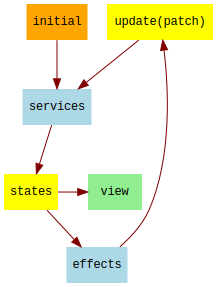

Table of Contents | Documentation Examples
All credit goes to James Forbes for his idea of services, and I am grateful to James for sharing this and other ideas that have significantly improved Meiosis.
In this section, we will look at how services and effects work in Meiosis. This is a slightly different approach than James' services, which is described in the Services section.

In Meiosis, services are functions that run every time there is an update. Services can alter
the state before the final state arrives onto the states stream. To change the state, services
return patches which are applied to the state. After all services have executed, the resulting state
arrives onto states stream, and the view is rendered.
After the view has rendered, effects can trigger more updates. Effects are functions that may
call update or actions to trigger more updates.
A service function receives state and returns a patch to alter the state. If a service does not
need to alter the state, it simply does not return a patch.
Service functions run synchronously and in order. Thus, a service can depend on the changes made by a previous service.
We can use service functions for computed properties, setting up an initial blank state for a page, cleaning up state after leaving a page, and any other state changes that we want to perform synchronously before rendering the view.
Effect functions receive state and may make asynchronous calls to update and/or actions to
trigger more updates. Since triggering an update will call the effect again, effect functions must
change the state in a way that will avoid an infinite loop.
Effects are good for tasks such as loading asynchronous data or triggering other types of asynchronous updates, saving state to local storage, and so on.
Let's see how we can set up services and effects with Meiosis. We'll start with our update stream:
const update = stream();Next comes our accumulator function. This function needs to ignore null or undefined patches.
That way, we can write services that don't return anything when they don't need to alter the state.
If we're using Mergerino, the accumulator is merge. This
function already ignores empty patches.
// Using Mergerino:
const accumulator = merge;If we're using function patches, we make a slight adjustment to check whether the patch is truthy before applying it. If it is not, we ignore the patch and just return the state unchanged.
// Using Function Patches:
const accumulator = (state, patch) => patch ? patch(state) : state;Next, we'll write a function that runs services. The function calls each service, accumulating state
by calling the accumulator:
const runServices = startingState =>
app.services.reduce(
(state, service) => accumulator(state, service(state)),
startingState
);Now, we can create our states stream with scan. We'll run the services on the initial state, as
well as in the accumulator function for scan:
const states = scan(
(state, patch) => runServices(accumulator(state, patch)),
runServices(app.initial),
update
);Next, we create our actions and effects:
const actions = app.Actions(update, states);
const effects = app.Effects(update, actions);Finally, we trigger effects whenever the state changes. This is simply a matter of calling each
effect function and passing the state:
states.map(state =>
effects.forEach(effect => effect(state))
);All together, here is our pattern setup:
const update = stream();
// Using Mergerino:
const accumulator = merge;
// Using Function Patches:
const accumulator = (state, patch) => patch ? patch(state) : state;
const runServices = startingState =>
app.services.reduce(
(state, service) => accumulator(state, service(state)),
startingState
);
const states = scan(
(state, patch) => runServices(accumulator(state, patch)),
runServices(app.initial),
update
);
const actions = app.Actions(update, states);
const effects = app.Effects(update, actions);
states.map(state => effects.forEach(effect => effect(state)));Our pattern setup is complete, and we can wire up the view using states, update, and actions.
Let's look at an example using services and effects.
Say we have an app with three pages: Home, Login, and Data. We'll use services and effects to achieve the following:
We'll use these properties in the state:
page to indicate the current page: "Home", "Login", "Data"login with username and password for the Login formdata to indicate "loading" or an array of data for the Data page.The login service checks whether the current page is "Login". If so, and the login form has not
yet been set up, it returns a patch to set up the form with a blank username and password.
If the current page is not "Login", and the login form is still present, the service returns a
patch to remove the login form from the state.
const loginService = state => {
if (state.page === "Login") {
if (!state.login) {
return { login: { username: "", password: "" } };
}
} else if (state.login) {
return { login: undefined };
}
};The data service checks whether the current page is "Data". If so, and data has not been set,
the service sets the data to "loading". The view uses this to display a Loading, please wait...
message.
If the current page is not "Data", the service clears the data property if it is present.
const dataService = state => {
if (state.page === "Data") {
if (!state.data) {
return { data: "loading" };
}
} else if (state.data) {
return { data: undefined };
}
};Finally, the data effect checks to see if the data property is "loading", in which case it calls
actions.loadData, which simulates loading data asynchronously.
Our app contains the initial state, the Actions constructor function, the array of services,
and the Effects constructor function which returns an array of effects.
const DataEffect = actions => state => {
if (state.data === "loading") {
actions.loadData();
}
};
const app = {
initial: {
page: "Home"
},
Actions: update => ({
loadData: () =>
setTimeout(
() =>
update({
data: ["One", "Two"]
}),
1500
)
}),
services: [loginService, dataService],
Effects: (_update, actions) => [DataEffect(actions)]
};You can see the complete example in action below.
In this section, we've augmented our Meiosis pattern setup with services and effects. We do not need a lot of code for this setup; nevertheless, for your convenience, you can also use the same setup by adding meiosis-setup to your project.
Table of Contents | Documentation Examples
Meiosis is developed by @foxdonut00 / foxdonut and is released under the MIT license.